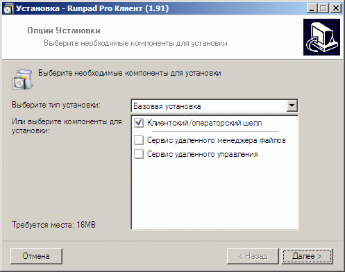
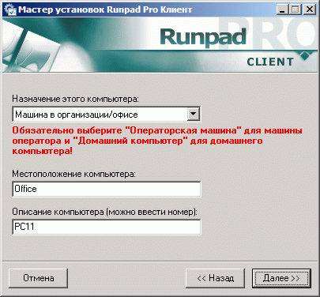
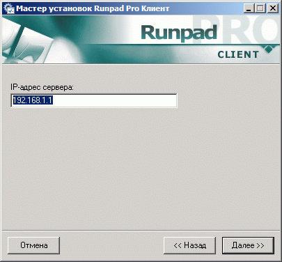
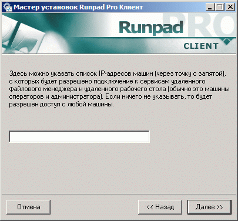
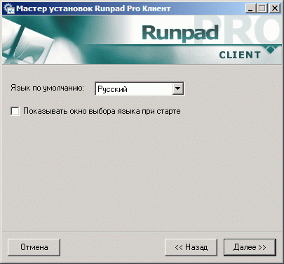

Клиентская часть может быть двух типов:
- с
шеллом (и опционально модулем
Rollback)
- без
шелла (только модуль
Rollback)
Тип клиентской установки вы выбираете сами в программе установки
Runpad Pro.
Это зависит от ваших потребностей, а также типа приобретенной лицензии на ПО
Runpad Pro.
В первом случае (с
шеллом) клиентская часть представляет собой оболочку, заменяющую рабочий стол Windows, которая служит для обеспечения безопасности и удобства работы пользователей (посетителей).
Также совместно с шеллом может быть использован и модуль
Rollback, который выполняет функции отката (восстановления образа дисков).
Во втором случае (без
шелла) клиентская часть представляет собой только модуль
Rollback, который невидим для пользователя, потому никаких видимых изменений в системе после его установки не произойдет.
Более подробно установка каждого типа клиентской части рассмотрена ниже:
Клиентская часть с шеллом (и опционально модулем Rollback)
Шелл служит для обеспечения безопасности и удобства работы пользователей (посетителей).
При использовании модуля Rollback выполняется также и функция отката (восстановление образа дисков).
Клиентскую часть необходимо установить на каждую клиентскую машину только один раз.
В случае использования терминального сервера достаточно установить только лишь на терминальный сервер.
Установка запустится только из-под учетной записи администратора компьютера!
При этом если на компьютере предусмотрена работа нескольких пользователей, то все равно установку нужно производить только один раз из-под учетной записи администратора!
Сами же пользователи, под которыми будет запускаться шелл, могут быть как администраторами, так и ограниченными пользователями системы.
При этом есть возможность выбора - запускать шелл на определенных пользователях, или на всех пользователях машины.
Также можно установить данную клиентскую часть и на машину оператора.
В ходе установки шелла будет предложена возможность установить сервисы удаленного управления машиной и удаленного файлового менеджера.
Вы можете их установить по вашему желанию. Однако если их не установить, то удаленно нельзя будет подключаться к этим машинам через программы удаленного управления, входящие в состав программы администратора/оператора.

После установки шелла будет автоматически запущена программа настроек, которую в любой момент можно будет запустить позднее для изменения настроек.
На первой странице будет предложено выбрать:
1) "Назначение машины" - выберите нужное. От него будут зависеть настройки по умолчанию.
Также обязательно нужно выбрать "Операторская машина", если устанавливаете шелл на машину оператора (аналогично и для домашнего компьютера)!
2) "Местоположение компьютера" - можно указать название зала (в случае нескольких) или название организации (если зал один).
В зависимости от этого параметра машины будут группироваться должным образом в программе оператора.
3) "Описание компьютера" - желательно уникальное название в пределах "местоположения".
В частном случае может совпадать с именем компьютера.
Для компьютерных клубов обычно устанавливают здесь номер машины.

Далее необходимо установить адрес сервера Runpad Pro (можно и имя машины, но рекомендуется именно IP-адрес).

Далее можно установить адреса, с которых будет разрешен доступ к утилитам удаленного рабочего стола и файлового менеджера. Если ничего не указывать (по умолчанию), то будет разрешен доступ с любой машины.
Сами эти утилиты не используют подключение через сервер RunpadPro. Используемые ими TCP-порты: 13224, 13225, 13226

На следующей странице предлагается выбрать используемый по умолчанию язык:

На этом установка клиентской части завершена.
Также можно установить данную клиентскую часть и на машину оператора.
Включается шелл только из программы оператора, потому на данном этапе никаких видимых изменений в системе видно не будет.
|
При использовании модуля Rollback выполняется функция отката (восстановление образа дисков).
Поскольку шелл в данной установке не используется, то изменения внешнего вида рабочего стола не произойдет.
Клиентскую часть необходимо установить на каждую клиентскую машину только один раз.
В случае использования терминального сервера достаточно установить только лишь на терминальный сервер.
Установка запустится только из-под учетной записи администратора компьютера!
При этом если на компьютере предусмотрена работа нескольких пользователей, то все равно установку нужно производить только один раз из-под учетной записи администратора!
Также можно установить данную клиентскую часть и на машину оператора (если в этом есть необходимость).
После установки будет автоматически запущена программа настроек, которую в любой момент можно будет запустить позднее для изменения настроек путем запуска программы установки еще раз.
На первой странице будет предложено выбрать:
1) "Назначение машины" - выберите нужное. От него будут зависеть настройки по умолчанию.
Также обязательно нужно выбрать "Операторская машина", если устанавливаете клиент на машину оператора (аналогично и для домашнего компьютера)!
2) "Местоположение компьютера" - можно указать название зала (в случае нескольких) или название организации (если зал один).
В зависимости от этого параметра машины будут группироваться должным образом в программе оператора.
3) "Описание компьютера" - желательно уникальное название в пределах "местоположения".
В частном случае может совпадать с именем компьютера.
Для компьютерных клубов обычно устанавливают здесь номер машины.
Далее необходимо установить адрес сервера Runpad Pro (можно и имя машины, но рекомендуется именно IP-адрес).
На этом установка клиентской части завершена.
Никаких видимых изменений в системе не произойдет. Управлять клиентской частью и контролировать модуль Rollback необходимо из программы оператора.
Для активации модуля отката файловой системы необходима соотв. лицензия, правильно сделанные настройки в программе администратора и две первоначальные перезагрузки клиентской машины. Более подробно см. справку по настройкам Rollback в программе администратора ("Глобальные настройки для компьютера").
Для изменения данных настроек необходимо запустить эту программу установки еще раз.
Удаление и обновление данной клиентской части также осуществляется через программу оператора.
|